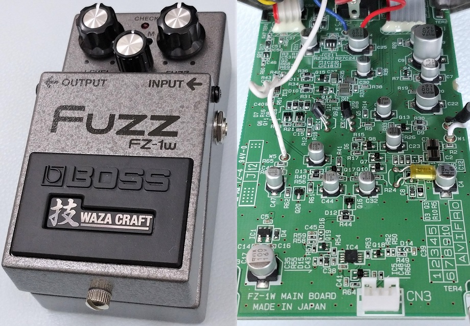
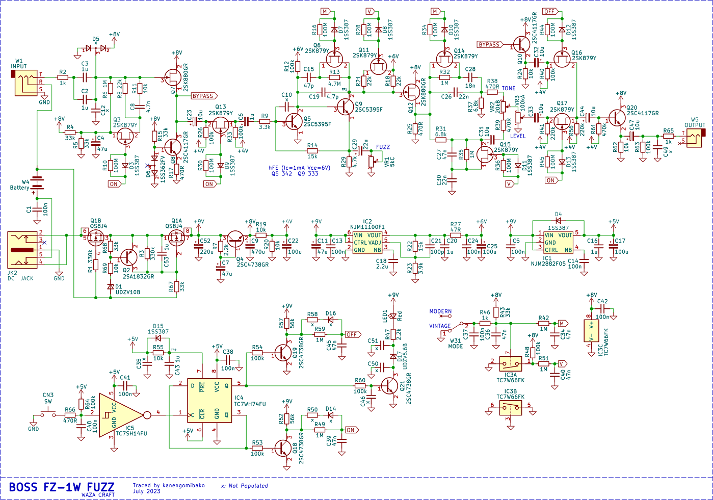
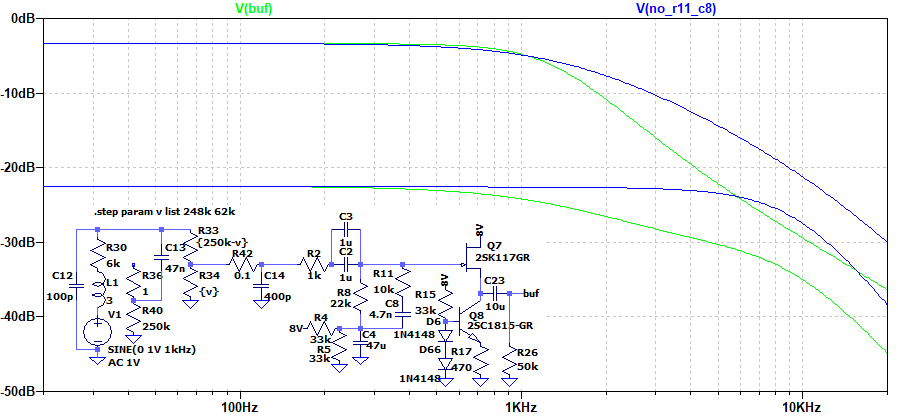
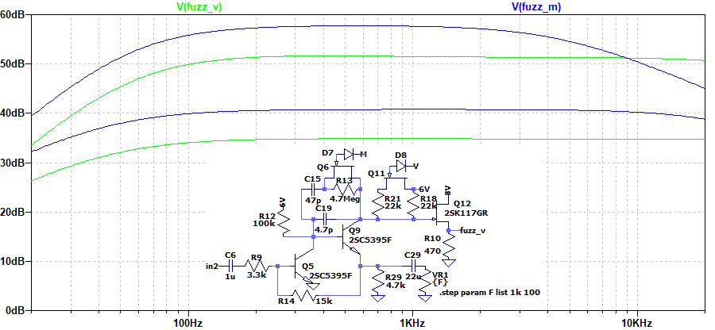
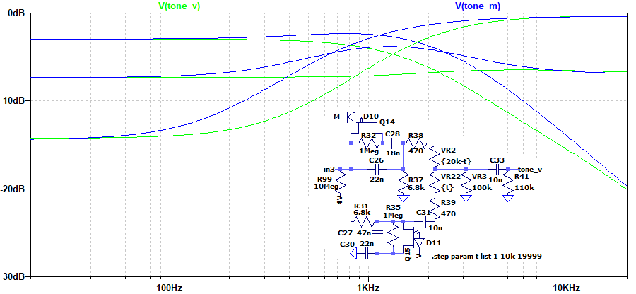

BOSS WAZA CRAFT FZ-1W FUZZ 解析
2023年08月12日 カテゴリー：修理・改造・解析

解析するには技量不足かなと思いしばらく放置していたBOSS FZ-1Wですが、意を決して解析しました。KiCadとLTspiceの回路図データはGitHubにあります。
基板中央付近にある表面実装のフィルムコンデンサは、半田ごてで取り外そうとすると簡単に破損してしまうので、周辺の部品を取り外すことにより容量値を実測しています。1.0mm×0.5mmサイズの表面実装部品は紛失にさえ気をつければ意外と大丈夫です。トランジスタ類は以前解析したBD-2Wと同じなので判別に苦労しませんでした。ただ、日清紡マイクロデバイスの製品はマーキング情報が公開されていないので、一部は直接問い合わせしました。（製品を購入していないのに問い合わせるのはよくない気がするので、今後はやめておきます。）
▽回路図

入力バッファの後に、ファズフェイスと同様の回路が採用されています。モード切替関連はBD-2WではアナログスイッチICでしたが、FZ-1Wでは主にFETスイッチです。
- トランジスタの選別
回路の中心を担うトランジスタは、2SC5395というイサハヤ電子製のものです。Q9の電圧は以下の通りです。
エミッタ：0.55V コレクタ：4.8V（Vモード） 3.5V（Mモード） ベース：1.1V
他の個体でほぼ同じ電圧だったという情報をX（旧Twitter）でいただいたので、おそらくQ5とQ9はhFEで選別されていると考えられます。BOSS製品は基本的に日本のメーカーの部品が使われているので、その中で安定供給が可能なスルーホール部品（選別しやすい）ということでこのトランジスタが採用されたのではないかと思います。
- 電源
供給電圧が10.7Vあたりを超えると、Q2オン→Q1Aオフとなり、回路全体の電源供給が遮断されるようになっています。また、Q5とQ9用に6Vがレギュレータで供給されており、ノイズ低減や電池の減りで音が変わらないことに配慮された設計です。
- フリップフロップ周辺
今までエフェクトオンオフ関連の双安定マルチバイブレータ回路がトランジスタで組んでありましたが、DフリップフロップICへ置き換わっています。最近発売されたDS-1Wでも同様の回路です。DS-1Wでは、R50とD14（R58とD16）にあたる部品が実装されています。FETスイッチへの信号が9Vから0Vへと変化する時、ダイオードによりC39（C45）の電荷を抜くのが速くなる効果が期待されます。すなわち、FETスイッチのオン→オフが速くなるということです。オン／オフ切替の一瞬の間だけですが、FETスイッチが全てオンになり発振するのを防いでいると考えられます。そしてFZ-1Wでは、発振が起こらないために実装されていないということかもしれません。
▽シミュレーション
- 入力部

ギターボリューム操作での音質変化を実現するためには、ファズフェイスのように入力インピーダンスを低くするという対応が考えられます（→FFM1解析参照）。そしてFZ-1WではR11とC8があることにより、高音域を減衰させるようになっています。公式サイトの説明に「ギター・ボリュームへの追従性は、かつてないスムーズさを備えており」とありますが、こういった設計がカギとなっているようです。
- 増幅部

基本的には、ファズフェイスと同様低音域をあまりカットしない増幅です。MモードではVモードよりゲインが上がり、高音域が少し削られています。また、Q9のコレクタ電圧がVモードで4.8V、Mモードで3.5Vなので、電源が6Vであることを踏まえると、Vモードの方が非対称に偏ったクリッピングになります。
- TONE 0%→50%→100%

ローパスフィルタとハイパスフィルタを組み合わせた、BIG MUFFやDS-1と同じタイプのトーンコントロールです。TONE 50%の時、BIG MUFFでは中音域がカットされる状態ですが、Vモードではフラットに近くMモードでは中音域が盛り上がった状態になっています。ファズフェイスにこのようなトーン回路をつけてみるのも面白いかもしれません。